BetKing
Project Delivery Report
Online Sports Betting Exchange Platform
Core platform delivered & operational
1. Overview
This document summarises the work completed to date on the BetKing betting platform, with live
screenshots of every module and a short usage guide. The platform is a complete, modern web
application covering the full betting journey — user onboarding, live match viewing, exchange-style
bet placement, wallet management — plus a full administrative back office for running the operation.
The work below is mapped against the agreed project modules.
2. Module Delivery Summary
| # | Module | Description | Cost (INR) | Status |
|---|
| 1 | User Management System | User registration, login, profile management, wallet system | 40,000 | Delivered |
| 2 | Betting Engine | Bet placement system, odds display, multi-leg bet builder, bet settlement | 50,000 | Delivered |
| 3 | Live Match Data Integration | Real-time match scores, live odds and event feed (sourced from third-party vendor) | 45,000 | Delivered |
| 4 | Admin Panel | Admin dashboard to manage users, bets, odds and platform settings | 40,000 | Delivered |
| 5 | Payment Gateway Integration | UPI / payment gateway integration for deposits and withdrawals | 25,000 | Delivered |
| 6 | Security & Fraud Protection | Login security, transaction validation, anti-fraud measures | 20,000 | Delivered |
| 7 | Analytics & Reporting | Reports for bets, users, platform revenue and activity | 15,000 | Delivered |
| 8 | Deployment & Testing | Server setup, QA testing and production deployment | 15,000 | Delivered |
| Total | | 2,50,000 | |
Note on Module 3 — Live Match Data: The platform is fully built to receive and
display live scores, odds and match events in real time. The live data itself is supplied by a
third-party sports data vendor — a separate subscription procured from the data
provider. Our platform is already integrated and ready to consume this feed.
3. Modules with Screenshots
Module 1 — User Management System
- Secure registration & login with session handling and role-based access (player / admin).
- Profile management — personal details, KYC verification status, notification preferences, password change.
- Integrated wallet balance shown live across the app; protected pages for logged-in users only.
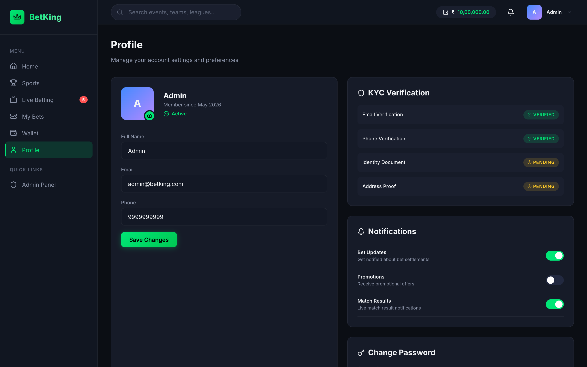
Player profile — account details, KYC verification, notification settings and password change.
Module 2 — Betting Engine
- Exchange-style match screen — Back and Lay market tables with multiple price levels and traded volumes per selection.
- Multiple market types per match — Match Odds, Bookmaker, Toss, Fancy and special combo markets.
- One-click Place Bet panel with quick-stake chips, odds stepper and live profit / liability calculation.
- Bet Slip with single bets and multi-leg bet builder (combined odds); full settlement to won / lost / cancelled.
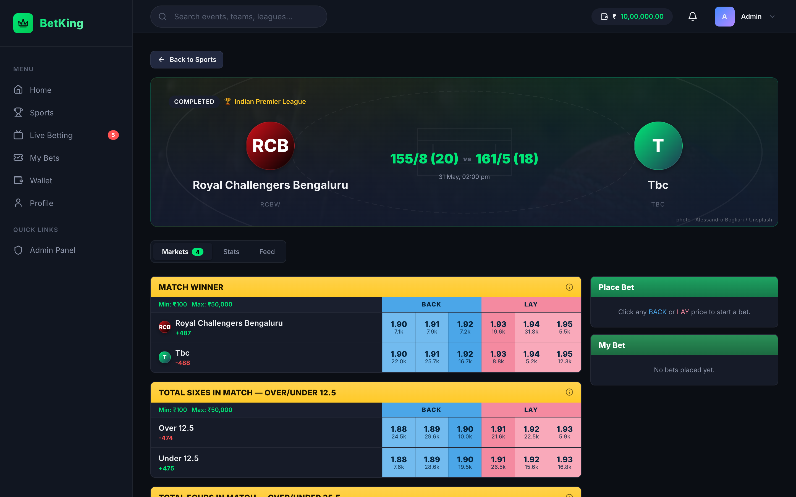
Exchange-style match screen — Back / Lay markets, live odds, and the Place Bet & My Bet panels.
Module 3 — Live Match Data Integration
- Real-time scores and live odds movement pushed instantly to all viewers (with up / down flash indicators).
- Live commentary / event feed, live match statistics, and an in-page match stream player.
- Live data feed supplied by third-party vendor — see note on the previous page.
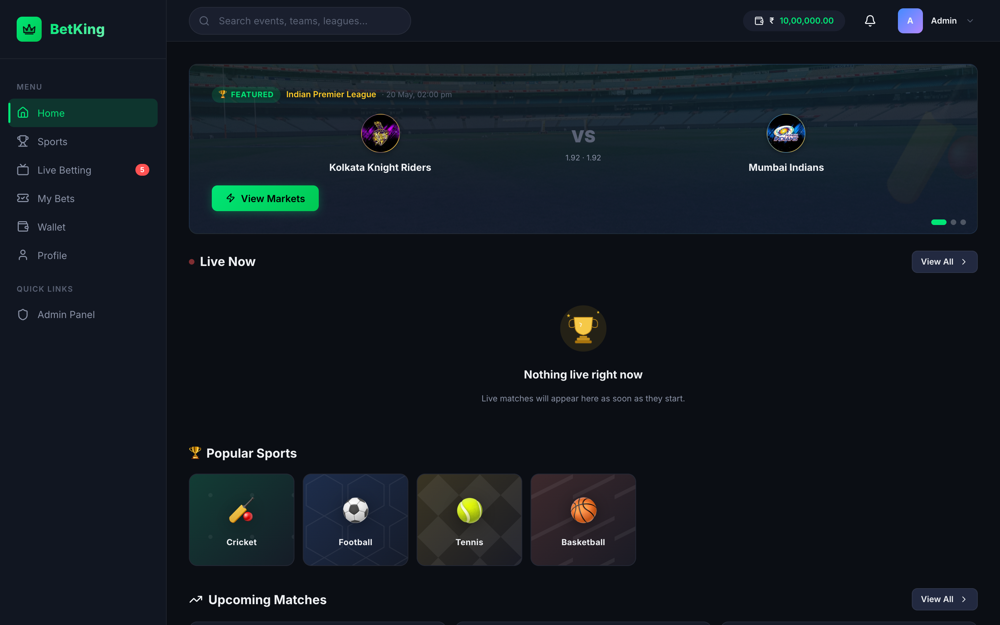
Home — featured match, live-now section and popular sports, all driven by real-time data.
Module 4 — Admin Panel
A complete back-office to run the platform: Dashboard, Risk, Users, Bets, Odds & Markets, Transactions and Settings.
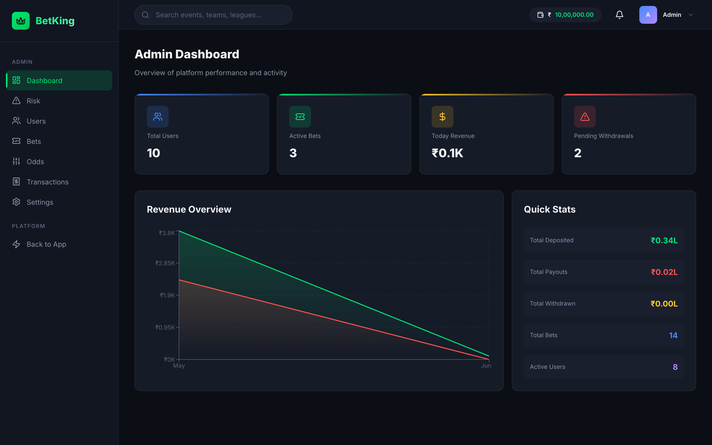
Admin Dashboard — platform metrics, revenue overview and quick stats at a glance.
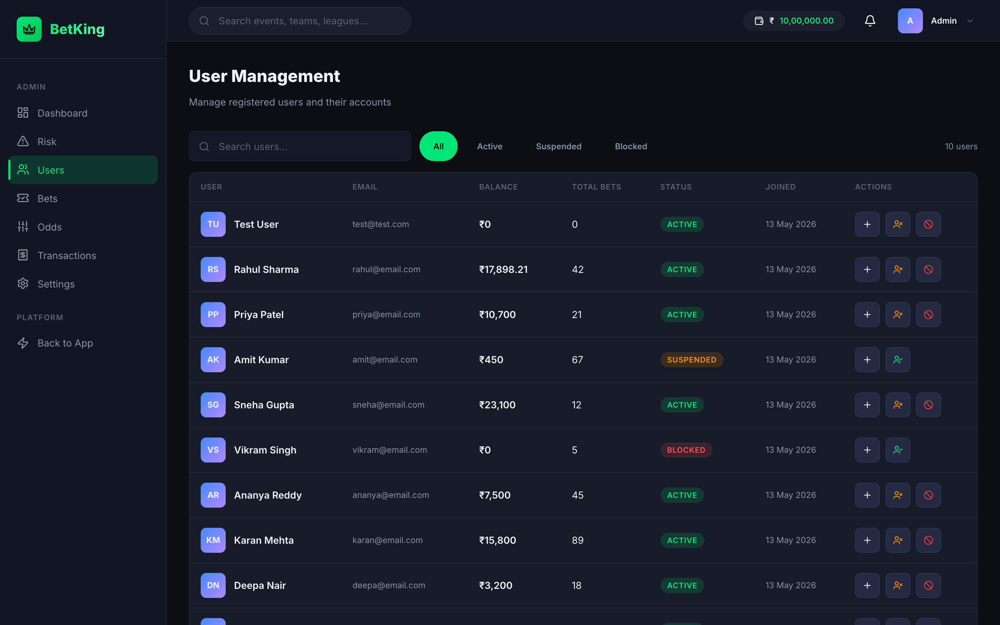
User Management — search users, adjust balances and suspend / block accounts.
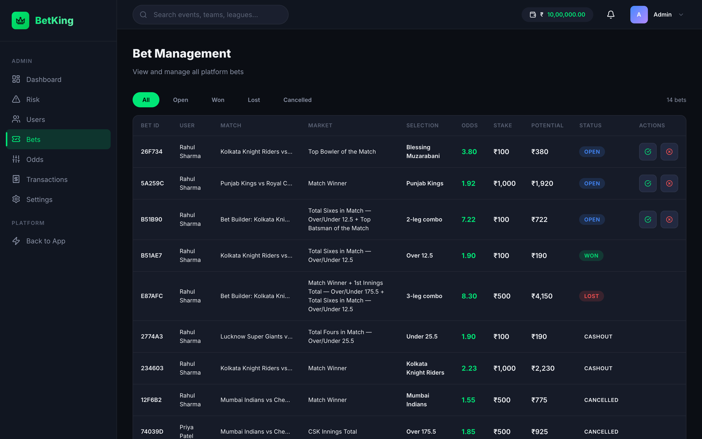
Bet Management — review every bet (singles & multi-leg) and settle results.
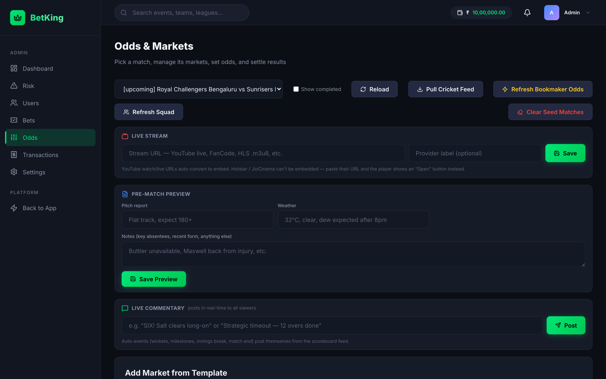
Odds & Markets — manage markets, stream, pre-match preview and live commentary per match.
Module 5 — Payment Gateway Integration
- Wallet deposit & withdrawal flows with UPI / payment-method support.
- Full transaction history for users and an admin approval workflow for withdrawals.
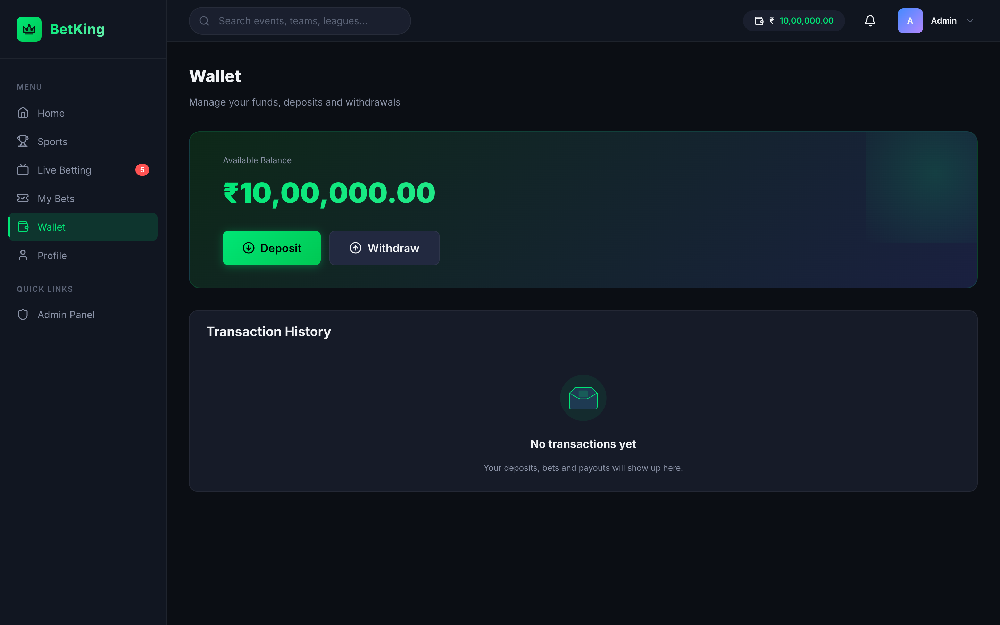
Player Wallet — available balance with Deposit / Withdraw and transaction history.
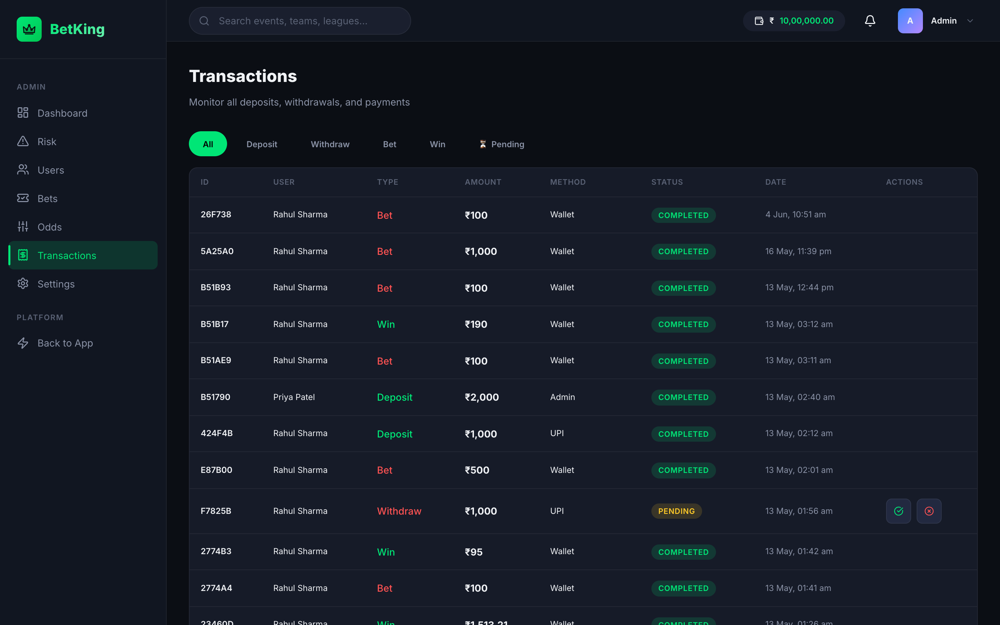
Admin Transactions — monitor all deposits, withdrawals and payments; approve pending requests.
Module 6 — Security & Fraud Protection
- Token-based authentication with automatic session expiry / logout; protected routes redirect unauthorised users to login.
- Server-side validation on all transactions and bet placements; balance checks prevent over-staking.
- Admin controls to suspend or block suspicious accounts; admin area hidden from regular users.
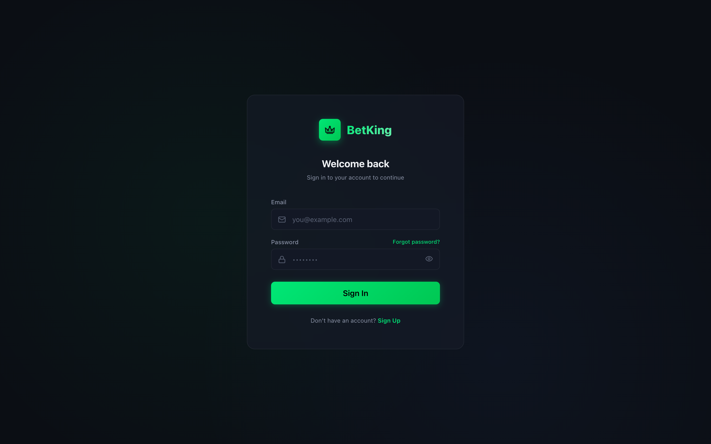
Secure sign-in — gateway to all protected betting and account features.
Module 7 — Analytics & Reporting
- Revenue & payout trend charts and real-time platform statistics for management.
- User activity / betting volume reporting and a live Risk & Exposure view.
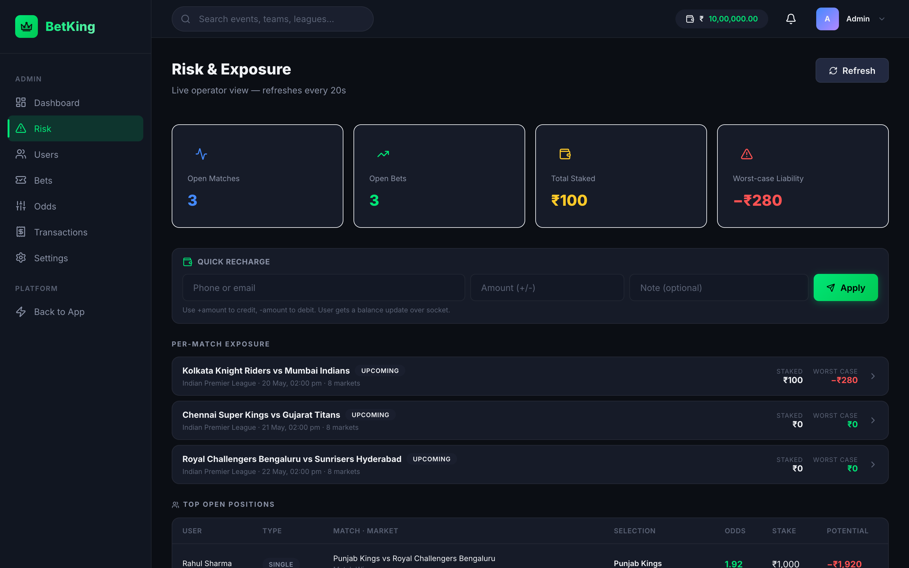
Risk & Exposure — live operator view of open matches, staked amounts and worst-case liability.
Module 8 — Deployment & Testing
- Production build pipeline configured and verified; live deployment with backend connectivity.
- Cross-device responsive layout — desktop, tablet and mobile — validated across core journeys.
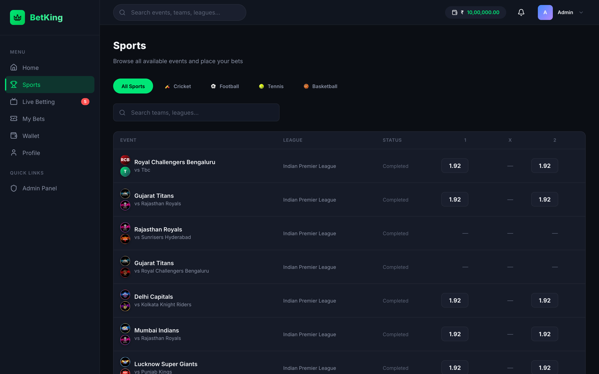
Sports — browse all events by sport with quick odds; part of the QA-validated, deployed build.
4. Quick Usage Guide
For Players
- Sign up / Log in — create an account or sign in from the welcome screen.
- Add funds — go to Wallet → Deposit and top up via UPI / payment method.
- Find a match — open Sports or Home and select an event.
- Place a bet — on the match screen, click a Back (blue) or Lay (pink)
price. The Place Bet panel opens — choose a quick-stake chip or type a stake, check the profit / liability, and press Submit.
- Combine selections — add two or more picks to the Bet Slip to create a multi-leg bet at combined odds.
- Track & withdraw — follow bets under My Bets; withdraw winnings from Wallet → Withdraw.
For Administrators
- Open the Admin Panel — admin accounts see an Admin Panel link (hidden from players).
- Monitor the business — the Dashboard shows users, active bets, revenue and pending withdrawals; Risk shows live exposure and worst-case liability per match.
- Manage markets — under Odds & Markets, add markets, set the stream, post live commentary, and suspend or settle markets.
- Manage users — search users, adjust balances, and suspend / block accounts under Users.
- Settle bets — review and settle results under Bets.
- Approve payments — approve or reject deposits and withdrawals under Transactions.
5. Platform Highlights
- Modern, professional UI with a polished dark theme across the entire app.
- Real-time everywhere — odds, scores, balances and bets update live without page refresh.
- Exchange-grade betting experience matching leading market platforms.
- Fully responsive across mobile, tablet and desktop, with complete admin control.
6. Dependency Note
To go fully live with real-time odds and scores, the platform requires a
live sports data feed from a third-party vendor. This is a separate recurring
subscription obtained from the data provider; the platform is already built and integrated to
receive it.